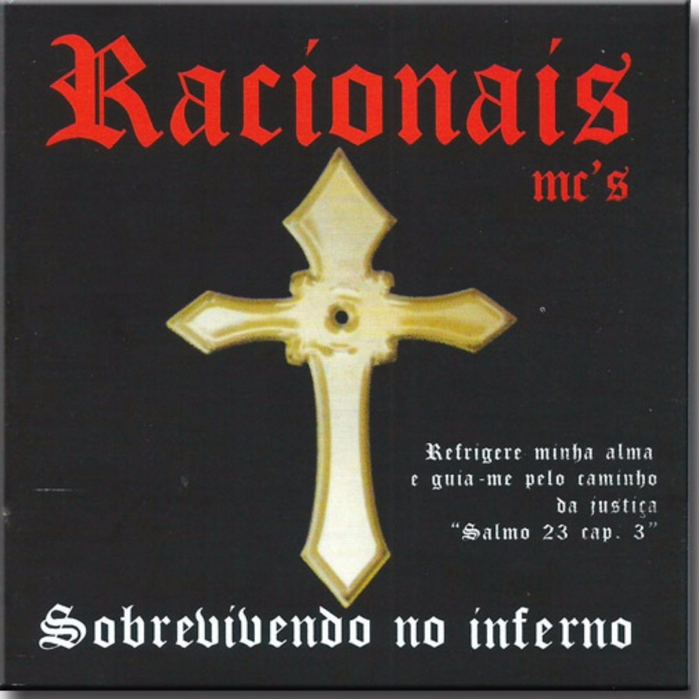

Tributo a Racionais MC's
Sobre:
A banda Racionais MC's, fundada em 1988 na cidade de São Paulo, é composta por Mano Brown, Ice Blue, Edi Rock e KL Jay. É o maior grupo de rap do Brasil, e está entre os grupos musicais mais influentes do país e da música brasileira.Suas canções demonstram a preocupação em denunciar a destruição da vida de jovens negros e pobres das periferias brasileiras e o resultado do racismo e da violência policial. O grupo atingiu reconhecimento internacional a partir de álbuns como Sobrevivendo ao Inferno(1997).
Os Racionais MC's tornaram-se bem conhecidos dentro da cena rap da periferia paulistana e da Grande São Paulo.[25] Essa popularização fez com que os integrantes dos Racionais MC's passassem a desenvolver trabalhos especialmente voltados para comunidades pobres, dentre os quais um projeto criado pela Secretaria Municipal de Educação de São Paulo, em que o conjunto realizou palestras em escolas sobre drogas, racismo, violência policial entre outros temas. Também participariam nos anos seguintes de diversos concertos filantrópicos em benefício de HIV positivos, campanhas de agasalho e contra a fome, além de atuarem em protestos como o aniversário da Abolição dos Escravos no Brasil.
Carreira:
Nascido no final da década de 1980, o nome do grupo foi inspirado no disco Tim Maia Racional de Tim Maia. A primeira gravação do grupo foi feita em 1988, quando o selo Zimbabwe Records lançou a coletânea Consciência Black, Vol. I. Neste LP, apareceram os dois primeiros sucessos do grupo: "Pânico na Zona Sul" e "Tempos Difíceis". Ambas canções apareceriam dois anos depois em Holocausto Urbano, primeiro disco oficial do grupo e cujas letras denunciam o racismo e a miséria na periferia de São Paulo, marcada pela violência e pelo crime.
Conquistas
| Ano | Conquistas |
|---|---|
| 1998 | VMB |
| 2002 | Prêmio Hutús |
| 2006 | Ordem ao Mérito Cultural |
| 2009 | Prêmio Hutús |
| 2012 | VMB |
| 2015 | Rolling Stone Brasil |